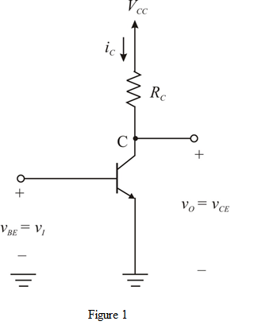

The expression for the voltage gain is,
 …… (1)
…… (1)
Substitute for .
At the edge of saturation,
…… (2)
Assuming linear operation around the bias point, the change in output voltage is,
…… (3)
Refer to Figure 6.33 9 (a) in the text book.
Draw the modified circuit.

The expression for the voltage gain is,
…… (1)
Substitute for .
At the edge of saturation,
…… (2)
Assuming linear operation around the bias point, the change in output voltage is,
…… (3)
Solve equations (2) and (3).
Simplify further.
Thus, the voltage gain  is .
is .
Determine the output voltage swing.
Determine the collector to Emitter voltage,  .
.
Thus, the value of  is
is  .
.
The peak value of the output sine wave is,

Thus, the value of the output sine wave is .